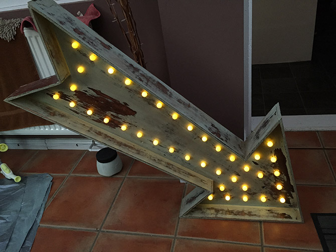

Featured Post:
Our USA Road Trip Honeymoon
Highlights of our road trip between Las Vegas, Death Valley, Yosemite, San Francisco, Monterey, Santa Barbara & LA as part of our honeymoon.
- 8th May 2013
- Posted in Events
- 9 Comments
Highlights of our road trip between Las Vegas, Death Valley, Yosemite, San Francisco, Monterey, Santa Barbara & LA as part of our honeymoon.
14 Aug

I’ve always loved those vintage style marquee bulb signs that used to appear on casinos and theaters, illuminating words shapes with hundreds on incandescent lights. A few weeks ago I decided to have a go at making my own using some spare sheets of plywood and a string of LEDs hacked together with a motion sensor. My completed arrow bulb sign now proudly sits at the top of the staircase in our house and lights the way whenever someone walks past it. I collected a bunch of photographs during the project, so here’s a little write up of the making of my DIY vintage bulb sign.
27 Apr
I had some fun in the woods with the Slo-Mo mode on my iPhone and my new medieval arrows.
Fun fact: The background music is Justin Bieber slowed down by 800%. The same song used during the slow motion scene at the end of the movie Dredd.
22 Apr
I often get asked what motorcycle I ride, so I made this little video to show off my Yamaha V Star bobber project.
16 Apr
Now the weather is turning nice I’ve been enjoying a little archery practice in the local woods. This time I took my GoPro to capture some clips and edited together an overly dramatic movie.
I love traditional archery that uses instinctive shooting over any kinds of sights. I use a 35# Buck Trail Black Hawk flatbow.
14 Feb
I made a Dog Cam using my GoPro and chest harness to film our walk in the woods from Jake’s perspective.